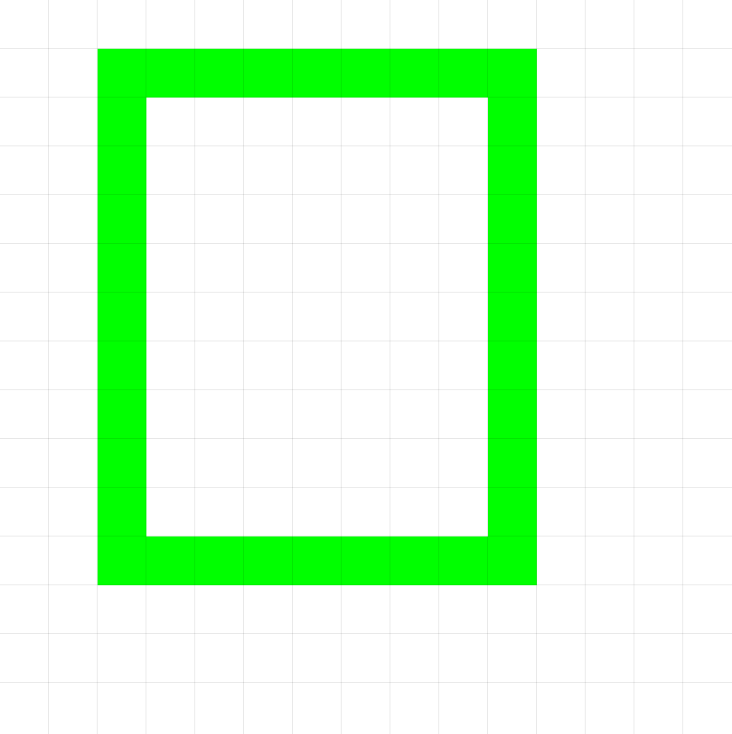
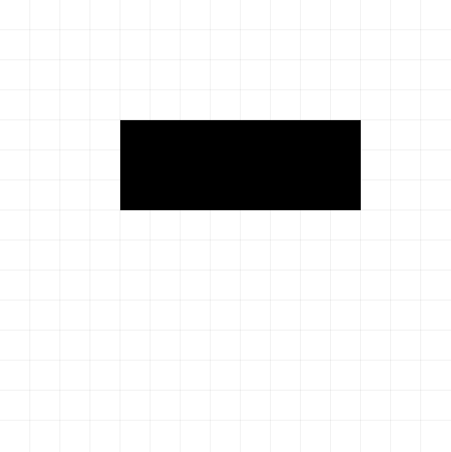

Commands and Functions
This section details the actions you can program in pixelWallE. Commands are the main instructions for drawing and manipulating the canvas, while functions allow you to get information about the editor's state or the canvas's content.
Commands
Commands are executable statements that perform an action, such as drawing a shape, changing the brush color, or moving a reference point. They do not return a value directly and are used as independent lines of code.
Spawn(x, y)
Initializes the robot on the canvas at position (x, y). Coordinates are relative to the top-left corner of the canvas (0,0).
x(Number): X-coordinate of the pixel.y(Number): Y-coordinate of the pixel.
Spawn(10, 15)
Spawn(0, 0)
DrawLine(x, y, distance)
Draws a straight line from the robot's current position in the direction (x1, y1) with the given distance.
x(Number): X-axis direction.y(Number): Y-axis direction.distance(Number): Length of the line.
DrawLine(1, 1, 100 ) # Draws a diagonal on a 100x100 canvas
DrawLine(1,0, 10) # Draws a horizontal line of length 10
Visual Example:

DrawLine(1, 0, 8 )
DrawCircle(x, y, radius)
Draws a circle with its center at the point reached by moving in the direction (x, y) a distance equal to the specified radius.
x(Number): X-axis direction.y(Number): Y-axis direction.radius(Number): The radius of the circle in pixels.
DrawCircle(1,1,20) # Draws a circle with radius 20
DrawCircle(0, 1, 5) # Draws a circle with radius 5 with the current brush color
Visual Example:

DrawCircle(1, 1, 5) # Starting at position (1,1)
DrawRectangle(x, y, distance, width, height)
Draws a solid rectangle with its top-left corner at (x, y), with the specified width, height, and color.
x(Number): X-axis direction.y(Number): Y-axis direction.distance(Number): Displacement.width(Number): Width of the rectangle in pixels.height(Number): Height of the rectangle in pixels.
DrawRectangle(1, 1,10, 30, 20) # Draws a rectangle displacing diagonally
DrawRectangle(0, 1, 5, GetCanvasSize() / 2, GetCanvasSize() / 2) # Draws a square
Visual Example:

DrawRectangle(1,1,5,5,6) # Starting at position (1,1)Fill()
Fills the entire canvas area with the same color as the pixel where the robot is currently located.
Fill()
Visual Example:

Fill() # Fills the green rectangle with red color
GoTo[label](Boolean Expression)
Continues execution from the label's position if the argument has a truth value of true.
label(Label): Label reference.Boolean Expression(Bool): Conditional expression.
label
.
.
.
GoTo[label](1>0) # Returns to the label
Size(size)
Sets the current "brush" size. This can affect the thickness of lines or the size of points drawn by other commands if the language supports it. Only odd values are allowed; if an even number is provided, it is converted to the nearest smaller odd number.
size(Number): The new size or thickness. A value of 1 is usually a single pixel.
Size(3) # Sets a thickness of 3 pixels
Color("black")
# If DrawLine respects the size:
DrawLine(1,0,6) # Draws a 3-pixel thick black line
Visual Example:

Spawn(5,5)
Size(3)
Color("black")
DrawLine(1,0,6)
ReSpawn(x, y)
Similar to Spawn, this command relocates the robot to the coordinates (x, y).
x(Number): X-coordinate.y(Number): Y-coordinate.
ReSpawn(GetCanvasSize() / 2, GetCanvasSize() / 2) # Relocates the robot to the center
Color(color)
Sets the "brush" color or the current color for drawing commands, e.g., DrawCircle(x, y, r). Supports predefined colors, Hexadecimal format, and RGB.
color(String): The new brush color.
Predefined colors
- "Red"
- "Blue"
- "Green"
- "Yellow"
- "Orange"
- "Purple"
- "Black"
- "White"
- "Transparent"
Color("green") # Sets the brush to green
DrawCircle(1, 1, 10) # Draws a green circle
Color("#FF00FF") # Changes the brush to magenta
DrawRectangle(1,0,3,5,7) # Draws a magenta rectangle
Print(string)
Prints the value of the string argument to the console. Supports any expression.
string(String): Console message.
Print("Hello World") # Classic new program message.
Run(path)
Executes the .pw file located at the specified path.
path(String): Path of the .pw file.
Run("/file/myWallE.pw") # Executes the code from myWallE.pw.
Functions
Functions are blocks of code that perform a task or calculation and return a value. This value can be used in expressions, assigned to variables, or passed as an argument to commands or other functions.
They are called by their name followed by parentheses (). If they require information to operate, this is passed as arguments within the parentheses.
GetActualX()
Returns the current X-coordinate of the editor's reference point or "brush".
- Takes no arguments.
- Returns: Number.
currentX <- GetActualX()
DrawLine(1, 0, GetActualX()) # Draws a line the distance of the current X position
GetActualY()
Returns the current Y-coordinate of the editor's reference point or "brush".
- Takes no arguments.
- Returns: Number.
currentY <- GetActualY()
GoTo[label](GetActualY() < 20) # Goes to the label if the Y position is less than 20
GetCanvasSize()
Returns the size of the canvas.
- Takes no arguments.
- Returns: Number.
size <- GetCanvasSize()
DrawRectangle(0, 1, GetCanvasSize(), GetCanvasSize(), 3) # Draws a rectangle the width of the canvas
GetColorCount(color, x, y, x2, y2)
Counts how many pixels within a specified rectangular area have the exact given color.
color(String): The color to search for.x(Number): X-coordinate of the top-left corner of the search area.y(Number): Y-coordinate of the top-left corner of the search area.x2(Number): X-coordinate of the bottom-right corner of the search area.y2(Number): Y-coordinate of the bottom-right corner of the search area.- Returns: Integer (the number of pixels found).
numRedPixels <- GetColorCount("red", 0, 0, 100, 100) # Counts red pixels in an entire 100x100 canvas
numBlueArea <- GetColorCount("blue", 10, 10, 30, 30) # Counts blue pixels in a specific area
IsBrushColor(color)
Checks if the current brush color is equal to the specified color.
color(String): The color to compare with.- Returns: Boolean (
trueif they match,falseotherwise).
GoTo[label](IsBrushColor("blue"))
# Only executes if the brush is blue
IsBrushSize(size)
Checks if the current brush size is equal to the specified size.
size(Number): The size to compare with.- Returns: Boolean.
isSize5 <- IsBrushSize(5) # isSize5 will be true or false
IsCanvasColor(color, y, x)
Checks if the pixel obtained by adding x and y to the current position has the specified color.
color(String): The color to check.y(Number): Vertical displacement.x(Number): Horizontal displacement.- Returns: Boolean.
isWhite<- IsCanvasColor("white") # Stores true or false
Variables
You can declare variables to store values (numbers, strings, booleans, lists) and reuse them throughout your script. They are declared using an identifier (variable name) and assigned an initial value using the <- operator.
myNumber <- 10
message <- "Drawing complete!"
isDone <- true
myColors <- ["red", "green"] # Declaring with a list literal
# You can reassign variables
myNumber <- myNumber + 5 # myNumber now equals 15
message <- "Updated " + message
The type of a variable is determined by the value initially assigned to it. List variables require the syntax specified above.
Variables can be used anywhere a corresponding type expression is expected.
Labels
Labels mark specific points in your code that you can jump to using the GoTo statement. A label consists of an identifier followed by a boolean expression.
# Start of script
Spawn(0,0)
Color("black")
Setup # This is a label
Fill()
DrawCircle(1,1,4)
Color("red")
GoTo[Setup](true)
DrawLoop # Another label, perhaps for a loop
# Repetitive drawing code here
# ...
# If a condition is met, jump to another label
EndScript # Label to finish
# Cleanup or finalization code
Fill()